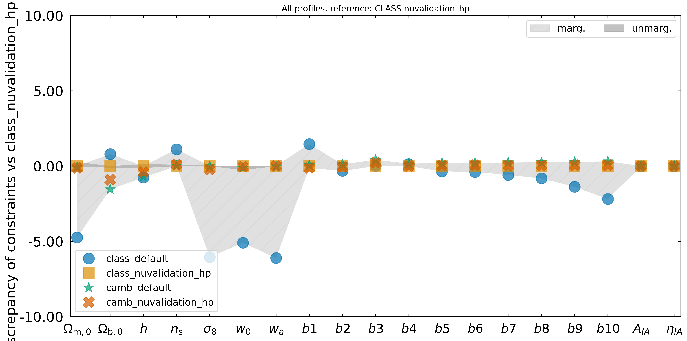

Default vs high-precision Boltzmann profiles#
Summary#
CosmicFishPie ships two kinds of Boltzmann-solver settings for the class and camb
backends: relaxed default.yaml profiles, used automatically when no
class_config_yaml / camb_config_yaml is given, and the paper-validated
nuvalidation_hp.yaml profiles (Archidiacono et al., arXiv:2405.06047v1). This page
records a rough check of how much the cheap default profiles change a photometric Fisher
forecast, compared with the high-precision ones.
Findings:
CAMB:
default.yamlreproducesnuvalidation_hp.yamlto better than 1% on every marginalised 1-sigma error (below 0.04% unmarginalised), at about 4.6x lower Fisher cost (30 s vs 138 s).CLASS:
default.yamldiffers fromnuvalidation_hp.yamlby up to about 6% on the marginalised cosmological errors (below 0.3% unmarginalised), at about 1.7x lower cost (111 s vs 186 s).Cross-code: with the
nuvalidation_hpprofiles, CLASS and CAMB agree to below 1% on all marginalised errors. With thedefaultprofiles they differ by up to about 6.5%, and that gap comes almost entirely from the CLASS default.
Decision: the default.yaml profiles are accurate enough for exploratory work and for
the MCMC / likelihood runs where Fisher-level accuracy at the few-percent level is
acceptable, and they are used there. Use nuvalidation_hp.yaml when the forecast itself
is the result. CAMB defaults in particular give essentially the same constraints at a
fraction of the cost.
This is a rough check, not a validation. See Caveats.
Setup#
Four Fisher matrices were computed, one per code and profile:
Case |
Backend config |
|---|---|
|
|
|
|
|
|
|
|
The forecast setup is the same for all four, in the style of the case-02 photometric campaign:
Survey:
Euclid-Photometric-Paper-Pessimistic, observablesGCph+WL, with the photometric galaxy-clustering tracer set to matter (P_mm).Specs:
common_specs_paper_w0wa_fixed_mnu_Neff.json, w0waCDM withmnuandNefffixed.Free cosmological parameters:
Omegam,Omegab,h,ns,sigma8,w0,wa.Nuisance parameters are also free, so they enter the marginalised errors: photometric bias
b1-b10and intrinsic alignmentAIA,etaIA.The backend YAML is passed explicitly through
<code>_config_yaml.
For each case the script times one fiducial cosmology evaluation (a cold call plus warm
calls) and then one serial FisherMatrix.compute(). Parallel derivative evaluation was
not used, so timings are single-process wall times, not the best achievable. Each case
ran as its own 16-CPU job on JURECA with OMP_NUM_THREADS=16.
The driver script lives outside this repository, in the cjfp-data job repository, as
jobs_punch/compare_backend_profiles.py (subcommands run, all, compare). The
discrepancy plots come from cosmicfishpie.analysis.plot_comparison.ploterrs.
What differs between the profiles#
CLASS (default.yaml vs nuvalidation_hp.yaml):
Setting |
default |
nuvalidation_hp |
|---|---|---|
|
70 |
50 |
|
10 |
50 |
|
|
|
|
5.0 |
4.0 |
|
150 |
80 |
|
|
not set |
|
not set |
0.058 |
neutrino and perturbation precision ( |
not set |
tightened |
CAMB:
Setting |
default |
nuvalidation_hp |
|---|---|---|
|
20 |
50 |
|
1 |
3 |
|
1 |
3 |
|
|
|
|
0 |
not set |
|
not set |
0.058 |
|
not set |
|
Note that z_max_pk is lower in the CLASS high-precision profile (4.0) than in the
default (5.0), and the tau_reio / tau handling differs. These are confounded with the
precision settings in this comparison; see Caveats.
Timings#
Wall times in seconds, from the saved timing.json of each case.
Case |
Cosmology evaluation |
Fisher computation |
Total job |
|---|---|---|---|
|
7.0 |
111.4 |
3 min 06 s |
|
11.9 |
186.4 |
4 min 46 s |
|
1.5 |
29.8 |
1 min 18 s |
|
8.5 |
137.7 |
3 min 40 s |
Cost of the high-precision profile relative to the default:
Code |
Cosmology evaluation |
Fisher computation |
|---|---|---|
CLASS |
1.7x |
1.7x |
CAMB |
5.6x |
4.6x |
CAMB’s default profile is the cheapest case overall: about four times faster than the CLASS default for the Fisher, and about 4.6 times faster than its own high-precision profile.
Discrepancies in the 1-sigma constraints#
All numbers are 100 * (a / b - 1) of the 1-sigma errors derived from the Fisher
matrices.
Default vs high-precision, same code#
Reference b is the nuvalidation_hp profile of the same code.
Parameter |
CLASS marg. (%) |
CAMB marg. (%) |
|---|---|---|
|
-4.75 |
+0.03 |
|
+0.80 |
-0.64 |
|
-0.76 |
-0.32 |
|
+1.11 |
-0.07 |
|
-6.05 |
+0.20 |
|
-5.10 |
-0.08 |
|
-6.11 |
-0.03 |
|
+1.46 |
about +0.15 to +0.24 ( |
CLASS bias parameters stay within about +-2%.
Unmarginalised errors agree to below 0.3% for CLASS (for example
Omegam+0.28,w0-0.26,h+0.13) and below 0.04% for CAMB.
The CLASS differences are largest for Omegam, sigma8, w0 and wa, and they mostly
disappear when the parameters are not marginalised. The cause was not investigated.
CLASS vs CAMB#
CAMB errors relative to CLASS errors (a is CAMB, b is CLASS), using the same profile
tier for both codes:
Parameter |
default profiles, CAMB vs CLASS marg. (%) |
|
|---|---|---|
|
+4.89 |
-0.12 |
|
-2.32 |
-0.91 |
|
+0.05 |
-0.39 |
|
-1.07 |
+0.10 |
|
+6.41 |
-0.23 |
|
+5.25 |
-0.04 |
|
+6.48 |
+0.01 |
With the high-precision profiles CLASS and CAMB agree to below about 0.9% on all cosmological parameters.
With the default profiles the same comparison gives up to about 6.5%. The mirror image of the CLASS default-vs-hp numbers above shows this is the CLASS default moving, not CAMB.
Unmarginalised errors agree to below 0.3% in both comparisons.
Plots#
Discrepancy of the 1-sigma constraints of all four cases relative to the CLASS
nuvalidation_hp Fisher, made with ploterrs
(compare_backend_profiles.py compare).

Recommendation#
CAMB: use
camb/default.yamlfor exploration and for MCMC chains. It matches the high-precision profile to well under 1% at a fifth of the Fisher cost.CLASS:
class/default.yamlis acceptable for exploration and MCMC chains where a few-percent difference in the constraints is tolerable. Errors onOmegam,sigma8,w0andwaare up to about 6% different from the high-precision result. Useclass/nuvalidation_hp.yamlwhen the CLASS Fisher is itself a result or is compared against CAMB.When quoting a CLASS-vs-CAMB agreement, state which profiles were used. Agreement at the percent level needs the high-precision profiles on both sides.
Caveats#
Nuisance parameters. These Fishers marginalise over photometric bias (
b1-b10) and intrinsic alignment (AIA,etaIA). They are therefore not identical to the fixed-nuisance convention of the case-02 campaign, and the marginalised percentages should not be compared one-to-one with those results.Confounded CLASS settings.
z_max_pkis 4.0 in the CLASS high-precision profile but 5.0 in the default, andtau_reioanduse_ppfalso differ. The CLASS discrepancy is therefore not attributable to the precision parameters alone. A controlled test would change one group of settings at a time. This was not done.Single fiducial, single configuration. One fiducial cosmology, one survey and one derivative scheme. Percent-level Fisher agreement does not guarantee the same agreement for posteriors that probe far from the fiducial point.
Timings. Serial Fisher, one run per case, on a shared cluster. Treat the ratios as indicative, not as benchmarks.
Not a validation. The numbers describe how the default profiles compare with the high-precision profiles. They do not show that either is correct against an external reference. For that, see Backend validation.